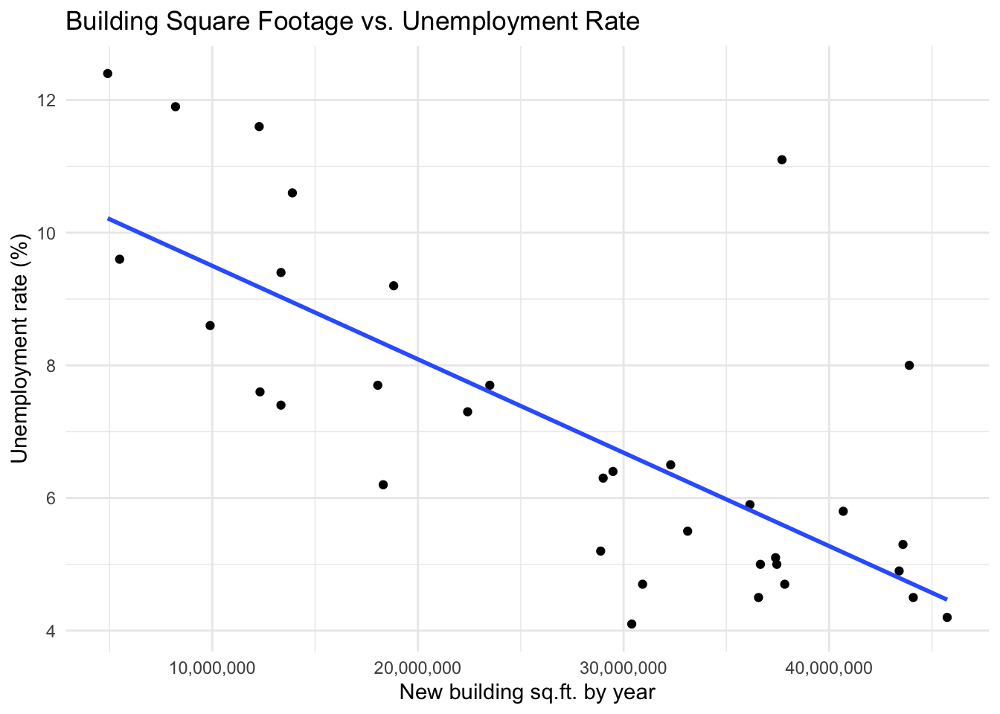
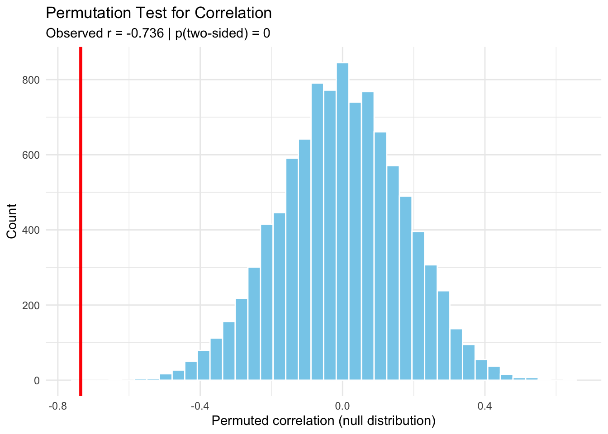

In this project, I conduct a small simulation study using a permutation test to explore whether there is an association between warehouse construction and unemployment rates in Southern California between 1990 and 2023.
Specifically, I ask:
Is there a relationship between economic growth through warehouse construction and local unemployment levels in Los Angeles, San Bernardino, and Riverside Counties from 1990 to 2023?
This question is interesting because warehouse development is often seen as an engine of local job creation in the Inland Empire, but data can reveal whether such development truly corresponds with lower unemployment.
Data Used:
WarehouseCITY dataset1 — total new warehouse square footage built per year (1990–2023).
Local Area Unemployment Statistics (LAUS) from the U.S. Bureau of Labor Statistics2 — annual unemployment rate for the same region.
Both of the above data sets were sourced and trimmed down to only the fields relevant to this question during a an old project I had been working on.
The following scatterplot displays the annual relationship between new warehouse square footage and unemployment rate. Each point represents one year between 1990 and 2023, with a linear trend line to visualize direction.
Code
new_sqft_by_unemployment |>ggplot(aes(x = Building_sqft, y = Unemployment_rate)) +geom_point() +geom_smooth(method ="lm", se =FALSE) +labs(title ="Building Square Footage vs. Unemployment Rate",x ="New building sq.ft. by year",y ="Unemployment rate (%)") +scale_x_continuous(labels =comma_format(accuracy =1)) +theme_minimal()
`geom_smooth()` using formula = 'y ~ x'

In this graph we see years with higher construction volumes tend to have lower unemployment, suggesting a potential negative correlation (although not an extremely strong one). However, to test whether this observed relationship could have arisen by random chance, we perform a permutation test.
Setting Up the Permutation Test
My hypotheses are:
Null hypothesis (H₀): There is no association between warehouse construction and unemployment rate.
Alternative hypothesis (H₁): Higher levels of warehouse construction correspond with lower unemployment.
The test statistic will be the correlation coefficient between Building_sqft and Unemployment_rate.
Simulation Design
I’ll first write a small function that computes a correlation after shuffling one variable. Then I’ll use a map() variant to repeat this process thousands of times, generating the null distribution.
Code
# Function to compute one permuted correlation# perm_cor for permutation correlationperm_cor <-function(df) {cor(df$Building_sqft, sample(df$Unemployment_rate))}# Run simulations using map_dbl()set.seed(47)n_sims <-10000r_perm <-map_dbl(1:n_sims, ~perm_cor(new_sqft_by_unemployment))# Observed correlation in original datar_obs <-cor(new_sqft_by_unemployment$Building_sqft,new_sqft_by_unemployment$Unemployment_rate)# Two-sided p-valuep_val <-mean(abs(r_perm) >=abs(r_obs))tibble(observed_r = r_obs, p_value_two_sided = p_val)
The histogram below shows the distribution of correlation coefficients obtained under the null hypothesis (no relationship). The vertical red line marks the observed correlation from the real data.
Code
tibble(r = r_perm) |>ggplot(aes(x = r)) +geom_histogram(bins =40, fill ="skyblue", color ="white") +geom_vline(xintercept = r_obs, color ="red", linewidth =1.2) +labs(title ="Permutation Test for Correlation",subtitle =paste0("Observed r = ", round(r_obs, 3)," | p(two-sided) = ", signif(p_val, 3)),x ="Permuted correlation (null distribution)",y ="Count") +theme_minimal()

The histogram is centered around 0, as expected under the null hypothesis. The observed correlation of approximately −0.74 lies far in the left tail of the distribution. Out of 10,000 permutations, none produced a correlation as extreme, implying a very small p-value and evidence against the null hypothesis.
Discussion
This simulation suggests a negative relationship between warehouse construction and unemployment in the Los Angeles–San Bernardino–Riverside region from 1990 to 2023, meaning that in years when more warehouse square footage was built, unemployment rates tended to be lower. However, it’s important to note that while the null hypothesis was disproved, that doesn’t mean the initial data shown at the top has a strong linear correlation (which is why this data got scrapped from the project i was originally using it for)
Furthermore, this result does not imply direct causation. Both variables may be influenced by larger economic cycles (e.g., recessions in 2008 and 2020). Still, this permutation study demonstrated a clear relationship in the data that through permutation testing we now know we can attribute to more than chance.
Footnotes
Phillips, S. A., & McCarthy, M. C. (2024). Warehouse CITY: An open data product for evaluating warehouse land-use in Southern California. Environment and Planning B, 51(8), 1965–1973. https://doi.org/10.1177/23998083241262553↩︎
U.S. Bureau of Labor Statistics. (2024). Local Area Unemployment Statistics (LAUS). https://www.bls.gov/lau/↩︎
Source Code
---title: "Permutation Testing"format: html: code-fold: show code-tools: true---```{r setup, include=FALSE}# ---- Packages ----library(tidyverse)library(scales)```## IntroductionIn this project, I conduct a small simulation study using a permutation test to explore whether there is an association between warehouse construction and unemployment rates in Southern California between 1990 and 2023.Specifically, I ask:| Is there a relationship between economic growth through warehouse construction and local unemployment levels in Los Angeles, San Bernardino, and Riverside Counties from 1990 to 2023?This question is interesting because warehouse development is often seen as an engine of local job creation in the Inland Empire, but data can reveal whether such development truly corresponds with lower unemployment.## Data Used:WarehouseCITY dataset^[Phillips, S. A., & McCarthy, M. C. (2024). Warehouse CITY: An open data product for evaluating warehouse land-use in Southern California. Environment and Planning B, 51(8), 1965–1973. https://doi.org/10.1177/23998083241262553] — total new warehouse square footage built per year (1990–2023).Local Area Unemployment Statistics (LAUS) from the U.S. Bureau of Labor Statistics^[U.S. Bureau of Labor Statistics. (2024). Local Area Unemployment Statistics (LAUS). https://www.bls.gov/lau/] — annual unemployment rate for the same region.Both of the above data sets were sourced and trimmed down to only the fields relevant to this question during a an old project I had been working on. ```{r}#| code-fold: truenew_sqft_by_unemployment <-tribble(~Year, ~Building_sqft, ~Unemployment_rate,1990, 33117000, 5.5,1991, 18049000, 7.7,1992, 13342000, 9.4,1993, 5496000, 9.6,1994, 9896000, 8.6,1995, 12322000, 7.6,1996, 13340000, 7.4,1997, 18313000, 6.2,1998, 40683000, 5.8,1999, 37391000, 5.1,2000, 43402000, 4.9,2001, 43587000, 5.3,2002, 29485000, 6.4,2003, 32292000, 6.5,2004, 36145000, 5.9,2005, 37454000, 5.0,2006, 36564000, 4.5,2007, 36654000, 5.0,2008, 22418000, 7.3,2009, 12283000, 11.6,2010, 4915000, 12.4,2011, 8212000, 11.9,2012, 13895000, 10.6,2013, 18823000, 9.2,2014, 23496000, 7.7,2015, 29009000, 6.3,2016, 28887000, 5.2,2017, 37838000, 4.7,2018, 45736000, 4.2,2019, 30398000, 4.1,2020, 37704000, 11.1,2021, 43896000, 8.0,2022, 44088000, 4.5,2023, 30926000, 4.7)```## Visualizing the Original RelationshipThe following scatterplot displays the annual relationship between new warehouse square footage and unemployment rate.Each point represents one year between 1990 and 2023, with a linear trend line to visualize direction.```{r}new_sqft_by_unemployment |>ggplot(aes(x = Building_sqft, y = Unemployment_rate)) +geom_point() +geom_smooth(method ="lm", se =FALSE) +labs(title ="Building Square Footage vs. Unemployment Rate",x ="New building sq.ft. by year",y ="Unemployment rate (%)") +scale_x_continuous(labels =comma_format(accuracy =1)) +theme_minimal()```In this graph we see years with higher construction volumes tend to have lower unemployment, suggesting a potential negative correlation (although not an extremely strong one).However, to test whether this observed relationship could have arisen by random chance, we perform a permutation test.## Setting Up the Permutation TestMy hypotheses are:| Null hypothesis (H₀): There is no association between warehouse construction and unemployment rate.| Alternative hypothesis (H₁): Higher levels of warehouse construction correspond with lower unemployment.The test statistic will be the correlation coefficient between Building_sqft and Unemployment_rate.## Simulation DesignI’ll first write a small function that computes a correlation after shuffling one variable.Then I’ll use a map() variant to repeat this process thousands of times, generating the null distribution.```{r}# Function to compute one permuted correlation# perm_cor for permutation correlationperm_cor <-function(df) {cor(df$Building_sqft, sample(df$Unemployment_rate))}# Run simulations using map_dbl()set.seed(47)n_sims <-10000r_perm <-map_dbl(1:n_sims, ~perm_cor(new_sqft_by_unemployment))# Observed correlation in original datar_obs <-cor(new_sqft_by_unemployment$Building_sqft,new_sqft_by_unemployment$Unemployment_rate)# Two-sided p-valuep_val <-mean(abs(r_perm) >=abs(r_obs))tibble(observed_r = r_obs, p_value_two_sided = p_val)```## Visualizing the Permutation DistributionThe histogram below shows the distribution of correlation coefficients obtained under the null hypothesis (no relationship).The vertical red line marks the observed correlation from the real data.```{r}tibble(r = r_perm) |>ggplot(aes(x = r)) +geom_histogram(bins =40, fill ="skyblue", color ="white") +geom_vline(xintercept = r_obs, color ="red", linewidth =1.2) +labs(title ="Permutation Test for Correlation",subtitle =paste0("Observed r = ", round(r_obs, 3)," | p(two-sided) = ", signif(p_val, 3)),x ="Permuted correlation (null distribution)",y ="Count") +theme_minimal()```The histogram is centered around 0, as expected under the null hypothesis.The observed correlation of approximately −0.74 lies far in the left tail of the distribution.Out of 10,000 permutations, none produced a correlation as extreme, implying a very small p-value and evidence against the null hypothesis.## DiscussionThis simulation suggests a negative relationship between warehouse construction and unemployment in the Los Angeles–San Bernardino–Riverside region from 1990 to 2023, meaning that in years when more warehouse square footage was built, unemployment rates tended to be lower. However, it's important to note that while the null hypothesis was disproved, that doesn't mean the initial data shown at the top has a strong linear correlation (which is why this data got scrapped from the project i was originally using it for)Furthermore, this result does not imply direct causation. Both variables may be influenced by larger economic cycles (e.g., recessions in 2008 and 2020).Still, this permutation study demonstrated a clear relationship in the data that through permutation testing we now know we can attribute to more than chance.